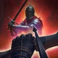

Прогресс прокачки
Отмечай шаги по ходу игры. Прогресс хранится в этом браузере, отдельно для каждого класса.
Обзор
Лучник — стрелок с луком, который сражается примерно с 20 метров: это дальность почти всех его скиллов. Урон у него один из лучших, но живучесть и полезность для группы низкие, поэтому позиционирование решает всё.
Билд одной фразой
Накинь баффы, держи на цели  Помечающий выстрел (Точность: +300 крит. удара и +35% урона Прицельный выстрел) и зажимай три кнопки:
Помечающий выстрел (Точность: +300 крит. удара и +35% урона Прицельный выстрел) и зажимай три кнопки:  Меткий выстрел, макрос и полностью заряженный
Меткий выстрел, макрос и полностью заряженный  Прицельный выстрел.
Прицельный выстрел.
Гайд следует Whelps — мейну Лучника с 1 млн CP на корейских серверах, который играл и на глобальном тесте, — и его PvE-билду на эндгейм 1 сезона на questlog.
Глобальный 1 сезон: что меняется
Глобальные серверы открываются 5 октября 2026 (ранний доступ для Founder's Pack — с 30 сентября). Что это значит для Лучника:
- Четыре стигмы на 37 уровне. Глобальный тест заканчивался на 37; пятый слот на 45 вероятен, но не подтверждён — если появится, в него идёт
 Взрывная стрела.
Взрывная стрела. - До 20 дойдут лишь несколько скиллов. Очками скилл качается до 10; Daevanion даёт +4, кольца +2, арканы до +4. В 1 сезоне рассчитывай на 20 у Прицельного выстрела и Шквала стрел и на третий — если повезёт с арканами.
- Кап точности неизвестен. В Корее для Ludra это около 1300; глобальные цифры будут на запуске.
- PvP: все стартуют в одинаковой слабой экипировке, меты ещё нет.
Скиллы
Слоты специализаций открываются на 8, 12 и 20 (на 16 появляется новый вариант, но не слот) — каждый такой уровень заметно усиливает скилл. Сначала качай активные скиллы, пассивки потом.
-
 Прицельный выстрел 20Заряжаемый выстрел — всегда на полный заряд и всегда под Точностью. До 20 бери первые две; если не нужно двигаться во время заряда, меняй «в движении» на +50% урона.
Прицельный выстрел 20Заряжаемый выстрел — всегда на полный заряд и всегда под Точностью. До 20 бери первые две; если не нужно двигаться во время заряда, меняй «в движении» на +50% урона.- 8СКР умений +30%
- 8Замена на умение с возможностью перемещения
- 16[Прицельный выстрел] Доп. урон при попадании
Все специализации
- 8Удаление затраты ОМ
- 8СКР умений +30%
- 8Замена на умение с возможностью перемещения
- 12Игнорирование блока и УКЛ, попадание мультиударом
- 16[Прицельный выстрел] Доп. урон при попадании
-
 Шквал стрел 20Бафф скорости боя и урона. До 20 бери «в движении» и −10 сек. перезарядки (или урон вместо подвижности).
Шквал стрел 20Бафф скорости боя и урона. До 20 бери «в движении» и −10 сек. перезарядки (или урон вместо подвижности).- 8Замена на умение с возможностью перемещения
- 12Чем меньше целей попадания, тем больше увелич. СКР боя, усиление урона в PvE и PvP
- 16Перезарядка -10 сек.
Все специализации
- 8+5 сек. к длительности
- 850% шанс отталкивания при попадании
- 8Замена на умение с возможностью перемещения
- 12Чем меньше целей попадания, тем больше увелич. СКР боя, усиление урона в PvE и PvP
- 16Перезарядка -10 сек.
-
 Пронзающая стрела 16Минимум 16. Если на боссе не хватает живучести — поглощение ОЗ вместо скорости скилла.
Пронзающая стрела 16Минимум 16. Если на боссе не хватает живучести — поглощение ОЗ вместо скорости скилла.- 8СКР умений +20%
- 16Доп. срабатывание [Пронзающей стрелы] 1 р.
Все специализации
- 8Поглощение 3% ОЗ
- 8Длительность Потери крови +2 сек.
- 8СКР умений +20%
- 12Гарантир. мультиудар при попадании
- 16Доп. срабатывание [Пронзающей стрелы] 1 р.
-
 Меткий выстрел 16Базовая атака: сокращает Прицельный выстрел и добавляет цепочку Tempest Arrow. На 20 — ещё мультиудар.
Меткий выстрел 16Базовая атака: сокращает Прицельный выстрел и добавляет цепочку Tempest Arrow. На 20 — ещё мультиудар.- 12Перезарядка [Прицельного выстрела] -1s при попадании
- 16Добавление 4-ой комбинации [Торнадо стрел]
Все специализации
- 8Восстановление ОМ +20%
- 8Поглощение 0.7% ОЗ
- 8Шанс мультиудара +50% при попадании
- 12Перезарядка [Прицельного выстрела] -1s при попадании
- 16Добавление 4-ой комбинации [Торнадо стрел]
-
 Скоростная стрельба 16Один из главных источников урона, но 16 хватает — крит всё равно будет в капе. В PvP его качают до 20 ради отбрасывания.
Скоростная стрельба 16Один из главных источников урона, но 16 хватает — крит всё равно будет в капе. В PvP его качают до 20 ради отбрасывания.- 8Чем меньше целей попадания, тем больше увеличение урона (макс. до 12%)
- 16СКР умений +20%
Все специализации
- 8Затрата ОМ -20%
- 8Крит. удар от умения +10%
- 8Чем меньше целей попадания, тем больше увеличение урона (макс. до 12%)
- 12Отталкивание с шансом 5% при успешном крит. ударе
- 16СКР умений +20%
-
 Опутывающий выстрел 1212 почти бесплатно даёт доска Daevanion.
Опутывающий выстрел 1212 почти бесплатно даёт доска Daevanion.- 8СКР умений +20%
- 8Замена на умение с возможностью перемещения
Все специализации
- 8Снижение СКР движ. от [Опутывающего выстрела] +20%
- 8СКР умений +20%
- 8Замена на умение с возможностью перемещения
- 12Добавление 2-ой комбинации [Сковывающая стрела]
- 16Длительность Замедления и Плена +2 сек.
-
 Помечающий выстрел 12+5% шанса идеального удара, +5 сек. длительности.
Помечающий выстрел 12+5% шанса идеального удара, +5 сек. длительности.- 8Совершенный удар +5% во время действия умения
- 8+5 сек. к длительности
Все специализации
- 8Совершенный удар +5% во время действия умения
- 8Шанс 30% оттолкнуть при попадании
- 8+5 сек. к длительности
- 12Непрерывное использование +1 раз
- 16Крит. удар, несмотря на блок и уклонение
-
 Рассекающая стрела 12На 20 бери и последнюю специализацию.
Рассекающая стрела 12На 20 бери и последнюю специализацию.- 8Замена на умение с возможностью перемещения
- 12Чем меньше целей попадания, тем больше увеличение урона (макс. до 20%)
Все специализации
- 8Поглощение 10% ОЗ
- 8Шанс мультиудара +50% при попадании
- 8Замена на умение с возможностью перемещения
- 12Чем меньше целей попадания, тем больше увеличение урона (макс. до 20%)
- 16Шанс 25% сбросить время перезарядки при попадании [Рассекающей стрелы]
-
 Взрывной капкан 12Только чтобы стянуть мобов (например, в Transcendence).
Взрывной капкан 12Только чтобы стянуть мобов (например, в Transcendence).- 8Притягивание врагов при взрыве
- 8Доп. урон через 3 сек. при попадании
Все специализации
- 8Притягивание врагов при взрыве
- 8Длительность Оглушения +1 сек.
- 8Доп. урон через 3 сек. при попадании
- 12Шанс Оглушения +20%
- 16Непрерывное использование +1 раз
-
 Поражающая стрела 12Только ради оглушения — на прокачке пригодится, в эндгейм-PvE не используется.
Поражающая стрела 12Только ради оглушения — на прокачке пригодится, в эндгейм-PvE не используется.- 8Шанс мультиудара +50% при попадании
- 8СКР умений +20%
Все специализации
- 8Шанс мультиудара +50% при попадании
- 8Длительность Оглушения +1 сек.
- 8СКР умений +20%
- 12Шанс Оглушения +20%
- 16Шанс 25% сбросить время перезарядки при попадании [Поражающей стрелой]
-
 Снятие шока 12На 16 — третья и пятая специализации.
Снятие шока 12На 16 — третья и пятая специализации.- 8При использовании [Снятия шока] восстанавливает 1000 ОД
- 8При использовании [Снятия шока] восстанавливает 20% ОЗ
Все специализации
- 8Добавляет 2-ой комбинации [Стрела молнии]
- 8При использовании [Снятия шока] восстанавливает 1000 ОД
- 8При использовании [Снятия шока] восстанавливает 20% ОЗ
- 12Длительность Непреклонности +2 сек.
- 16Стойкость к урону в PvE +50% и стойкость к урону в PvP +25% во время действия Непреклонности
-
 Град из стрел не качатьРаботает только по ошеломлённому боссу, а обычная ротация бьёт сильнее — не качай.
Град из стрел не качатьРаботает только по ошеломлённому боссу, а обычная ротация бьёт сильнее — не качай.Все специализации
- 8Поглощение 5% ОЗ
- 8Восстановление 120 ОМ при попадании
- 8Замена на умение с возможностью перемещения
- 12Гарантир. мультиудар при попадании
- 16Перезарядка всех умений -1s при попадании
Пассивки
По-настоящему важны только  Око концентрации (увеличение урона) и
Око концентрации (увеличение урона) и  Решимость охотника (крит. урон); третья —
Решимость охотника (крит. урон); третья —  Душа охотника.
Душа охотника.
- Дальше атакующие:
 Шквальный огонь,
Шквальный огонь,  Пленяющий взгляд,
Пленяющий взгляд, 
Стрельба вблизи. - Затем
 Всевидящее око (макс. ОЗ) и
Всевидящее око (макс. ОЗ) и  Контракт оживления (лечение при 10% ОЗ).
Контракт оживления (лечение при 10% ОЗ).  Железная воля и
Железная воля и  Сила ветра почти бесполезны — качай остатками очков.
Сила ветра почти бесполезны — качай остатками очков.
Экипировка и связывание души
С экипировкой всё просто: бери предметы с наибольшим уровнем. На эндгейме это крафтовые оружие, гард и бижутерия, браслеты из Ludra и броня из подземелий.
| Слот | Обязательные связывания души |
|---|---|
| Оружие, гард | Скорость боя, увеличение урона оружия, увеличение урона, Мощь (+ мультиудар у крафтового) |
| Шлем, плащ | Двойной шанс, увеличение атаки |
| Наплечники | Двойной шанс, увеличение крит. урона |
| Нагрудник | Увеличение урона |
| Поножи | Увеличение атаки, стойкость к урону |
| Перчатки / сапоги | Скорость боя / скорость передвижения |
| Серьги / ожерелье | Скорость передвижения + Мощь / скорость боя + Мощь |
| Кольца | Уровни |
- Точность — второй по важности стат. Парированный удар теряет больше половины урона, а Лучник не всегда может бить в спину. Цель — ~1100–1200 (саппорты добавляют +100).
- Остальные слоты: атака, шанс крита или Око концентрации — оставляй то, что выпало первым. Крит Лучнику капнуть проще (+300 от Помечающего выстрела).
- Манастоуны: в 1 сезоне хватит одной жёлтой строки атаки; не гонись за сетами «удар спереди/сзади».
- Перекатывай связывания только на броне, где уже есть одно из обязательных.
Арканы
Арканы — способ поднять скиллы выше 16. Цель — +4 к  Прицельный выстрел и
Прицельный выстрел и  Шквал стрел; +4 к
Шквал стрел; +4 к  Меткий выстрел даст третий скилл на 20.
Меткий выстрел даст третий скилл на 20.
| Карта | Тип | Что ловить |
|---|---|---|
| Grail | Vigor | Прицельный выстрел, Шквал стрел (джокер: может выпасть что угодно) |
| Parchment | Vigor | Меткий выстрел, Скоростная стрельба (Пронзающая и Рассекающая стрелы — запасной вариант) |
| Compass | Death или Freedom | Прицельный выстрел, Шквал стрел |
| Bell | Destruction | Решимость охотника |
| Mirror | Wisdom | Око концентрации |
Арканы падают с 4-й стадии Transcendence и зависят от удачи — не переживай, во 2 сезоне систему, скорее всего, поменяют.
Доски Daevanion
Со временем ты заполнишь почти все доски, так что не нужно всё планировать заранее. Каждый синий узел — +1 уровень его скилла.
- 1. Синие узлы, которые поднимают активные скиллы до 12 (открывает вторую специализацию): Прицельный выстрел, Меткий выстрел, Шквал стрел, Пронзающая стрела, Рассекающая стрела.
- 2. Атакующие оранжевые узлы в углах досок — скорость боя, сокращение перезарядки. Иди кратчайшим путём и бери скиллы по дороге.
- 3. Узлы атаки, шанса крита,
 Око концентрации и
Око концентрации и  Решимость охотника; затем всё остальное (защита: защита, ОЗ, сопротивление криту).
Решимость охотника; затем всё остальное (защита: защита, ОЗ, сопротивление криту). - В самом конце обходи узлы MP+50. Сброс доски стоит дёшево.
- Приоритет: синие узлы Прицельный выстрел, Опутывающий выстрел, Поражающая стрела, Помечающий выстрел, Снятие шока.
- Ariel, а не Azphel на 45.
- Azphel, а не Ariel, и Triniel раньше.
Стигмы
Сначала качай их ровно — 5 / 5 / 5, потом 10, — чтобы брать каждый порог. Как только хватит очков на Силу Байзела 20, сбрось и вложи сначала в неё: с этого момента Лучник раскрывается. Затем по очереди до 20 Благословенный лук, Поддерживающий огонь и Стрела грифона.
-
 Сила Байзела Lv 20×1,5 к Оку концентрации и Душе охотника; на 20 каждый крит с шансом 50% сокращает перезарядку всех скиллов на 1 сек. — огромный прирост урона.
Сила Байзела Lv 20×1,5 к Оку концентрации и Душе охотника; на 20 каждый крит с шансом 50% сокращает перезарядку всех скиллов на 1 сек. — огромный прирост урона.- 5Совершенный удар +10% во время действия умения
- 10Эффект [Око концентрации] во время действия умения x1,5
- 15Эффект [Души охотника] во время действия умения x1,5
- 20С шансом 50% уменьшает время перезарядки всех умений на 1s сек. при крит. ударе во время действия
Все специализации
- 5Совершенный удар +10% во время действия умения
- 10Эффект [Око концентрации] во время действия умения x1,5
- 15Эффект [Души охотника] во время действия умения x1,5
- 20С шансом 50% уменьшает время перезарядки всех умений на 1s сек. при крит. ударе во время действия
-
 Благословенный лук Lv 10 → 20Мультиудар, атака от крита, крит. урон и двойной шанс.
Благословенный лук Lv 10 → 20Мультиудар, атака от крита, крит. урон и двойной шанс.- 5Попадание мультиударом +50% во время действия умения
- 10Увелич. АТК пропорционально крит. удару во время действия
- 15Увеличение крит. урона +20% во время действия умения
- 20Мощный удар +7% во время действия умения
Все специализации
- 5Попадание мультиударом +50% во время действия умения
- 10Увелич. АТК пропорционально крит. удару во время действия
- 15Увеличение крит. урона +20% во время действия умения
- 20Мощный удар +7% во время действия умения
-
 Поддерживающий огонь Lv 10 → 20Сфера, которая стреляет вместе с тобой; перезарядка как у Силы Байзела, поэтому их можно повесить на одну кнопку.
Поддерживающий огонь Lv 10 → 20Сфера, которая стреляет вместе с тобой; перезарядка как у Силы Байзела, поэтому их можно повесить на одну кнопку.- 5Шанс срабатывания +25%
- 10Длительность умения +15 сек.
- 15Перезарядка -30 сек.
- 20Гарантир. крит. удар при попадании
Все специализации
- 5Шанс срабатывания +25%
- 10Длительность умения +15 сек.
- 15Перезарядка -30 сек.
- 20Гарантир. крит. удар при попадании
-
 Стрела грифона Lv 10 → 20Периодический урон «Багровое пламя»; открывает линию макроса.
Стрела грифона Lv 10 → 20Периодический урон «Багровое пламя»; открывает линию макроса.- 5Замена на умение с возможностью перемещения
- 10Длительность постоянного урона +5 сек.
- 15Усиление Искры: доп. урон при атаке цели в состоянии «Искра»
- 20Интервалы постоянного урона сокращаются на 50%
Все специализации
- 5Замена на умение с возможностью перемещения
- 10Длительность постоянного урона +5 сек.
- 15Усиление Искры: доп. урон при атаке цели в состоянии «Искра»
- 20Интервалы постоянного урона сокращаются на 50%
-
Взрывная стрела 5-й слотЕсли на 45 откроется пятый слот: держи её на 5–10, пока остальные не дойдут до 20.
- 5Перезарядка -15 сек.
- 10+10% дополнительного урона по целям, находящимся под эффектом Замедления или Плена
Все специализации
- 5Перезарядка -15 сек.
- 10+10% дополнительного урона по целям, находящимся под эффектом Замедления или Плена
- 15Гарантир. крит. удар при попадании
- 20+20% дополнительного урона по целям, находящимся под эффектом Замедления или Плена
-
 Ураган стрел прокачкаАоЕ по пачкам на прокачке.
Ураган стрел прокачкаАоЕ по пачкам на прокачке.- 5Чем больше целей попадания, тем больше увеличение урона (макс. до 20%)
Все специализации
- 5Чем больше целей попадания, тем больше увеличение урона (макс. до 20%)
- 10Замедление на 10s при попадании
- 15Длительность Оглушения +1 сек.
- 20Шанс Оглушения +25%
Ротация и макрос
В AION 2 есть два разных инструмента, и билд использует оба:
- Линия на кнопке — несколько скиллов на одной кнопке панели. Нажатие кастует готовый скилл с наивысшим приоритетом, и в AION 2 наивысший приоритет у нижнего слота. Карточки показывают линию сверху вниз, как в игре.
- Встроенный макрос — пока ты держишь его клавишу, он по очереди нажимает линии и отменяет хвосты анимаций. Скиллы на перезарядке пропускаются.
1. Линии на кнопках
Важны только эти две линии; ставить их можно в любые слоты панели.
-
3
Рассекающая стрела
-
2
Опутывающий выстрел
-
1
Стрела грифона
Порядок как в игре, сверху вниз. 1 = высший приоритет — нижний слот.
Опутывающий выстрел замедляет цель, чтобы по ней прошла Рассекающая стрела.
-
3
Скоростная стрельба
-
2
Пронзающая стрела
-
1
Шквал стрел
Порядок как в игре, сверху вниз. 1 = высший приоритет — нижний слот.
Скоростная стрельба заполняет все паузы.
2. Встроенный макрос
Окно скиллов → Макрос: добавь линию грифона, затем линию шквала, по 10 мс (кто-то находит оптимум между 10 и 20 мс — проверь сам). Повесь макрос на ПКМ в Настройки → Управление → Общее → Макрос.
- 1Линия грифона1 · 10 мс
- 2Линия шквала2 · 10 мс
- Играй в режиме управления AION 2 — в режиме AION 1 встроенный макрос ограничен.
- Включи очередь скиллов в настройках управления боем.
- Назначь Прицельный выстрел вторую клавишу в Управление → Быстрые слоты (боковая кнопка мыши).
3. Что нажимать на самом деле
- ОткрытиеБаффы вручную — Благословенный лук, Поддерживающий огонь + Сила Байзела (одна кнопка, одинаковая перезарядка), — затем Помечающий выстрел и полностью заряженный Прицельный выстрел.
- ДержатьМеткий выстрел на ЛКМ, макрос на ПКМ и Прицельный выстрел на боковой кнопке — все три сразу.
- ПоддерживатьПомечающий выстрел — обновляй, когда Точности осталось меньше ~3 сек. (смотри на панель баффов). Точность: +5% шанса идеального удара, +300 крит. удара, +35% урона Прицельного выстрела.
- По откатуСнова баффы.
Итог
- Скиллы: Прицельный выстрел и Шквал стрел 20; Пронзающая стрела, Меткий выстрел, Скоростная стрельба 16; остальное 12; Град из стрел не качать.
- Стигмы: сначала Сила Байзела 20, затем Благословенный лук, Поддерживающий огонь, Стрела грифона; Взрывная стрела — если откроется 5-й слот.
- Пассивки: Око концентрации, Решимость охотника, затем Душа охотника.
- Статы: точность до капа, затем атака / шанс крита.
- Арканы: +4 к Прицельному выстрелу и Шквалу стрел.
Как сражаться во время прокачки
- Пачки: Взрывной капкан под ноги → Опутывающий выстрел → Пронзающая стрела + Скоростная стрельба. Мобы сами забегают в ловушку.
- Элитки: Помечающий выстрел (Точность) → Опутывающий выстрел → Рассекающая стрела → заряженный Прицельный выстрел. Кайти, не танкуй.
- Мало ОЗ: Пронзающая и Рассекающая стрелы поглощают ОЗ. Сначала выйди из ближнего боя, потом лечись.
Макрос на прокачке
Упрощённая настройка для прокачки и первых дней на капе — из ранних макросов Grobs. В макрос идут только скиллы, которые спамишь; баффы, стигмы на бурст и сближения — на отдельных клавишах.
-
2
Взрывная стрела
-
1
Стрела грифона
Порядок как в игре, сверху вниз. 1 = высший приоритет — нижний слот.
-
3
Скоростная стрельба
-
2
Шквал стрел
-
1
Пронзающая стрела
Порядок как в игре, сверху вниз. 1 = высший приоритет — нижний слот.
Встроенный макрос: Линия 1 → Линия 2, у каждого задержка 10 мс. Держи базовую атаку  Меткий выстрел на ЛКМ и клавишу макроса вместе.
Меткий выстрел на ЛКМ и клавишу макроса вместе.
Когда скиллы дойдут до 12–16 и специализации изменят перезарядки, переходи на полную настройку во вкладке PvE.
Источники
- Whelps — гайд на Лучника AION 2 и его PvE-билд на эндгейм 1 сезона на questlog — билд, которому следует гайд (скиллы, стигмы, макрос, экипировка, арканы)
- TitanTheF — таблица прогрессии AION 2 (вкладка «Лучник») и его билд 45+ на aion2t — прежний глобальный билд (уровни скиллов, прокачка)
- questlog.gg — данные скиллов и стигм из глобального клиента
- 7MMO — полный корейский PvE-билд (скиллы, стигмы, макрос)
- Vortex Gaming — корейская сборка стигм после патча
- Game8 — уровни открытия скиллов, основы ротации
- Gamers Together — подход к PvP
- Галерея AION 2 на DCInside — посты корейских игроков о текущей мете и стигмах (анонимные авторы, отдельной ссылки нет)
- nemobek.github.io/aion2-guide (таблица TitanTheF) — маршрут прокачки
- Grobs — AION 2 Macro Guide — как работают линии и встроенный макрос